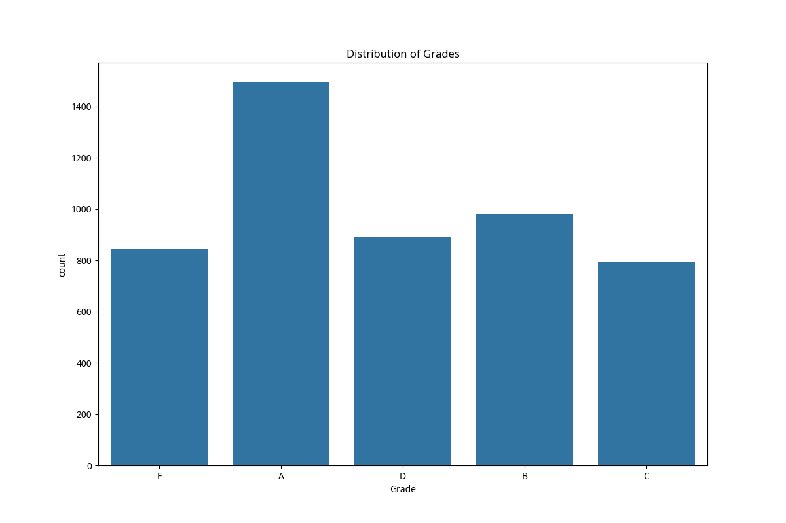
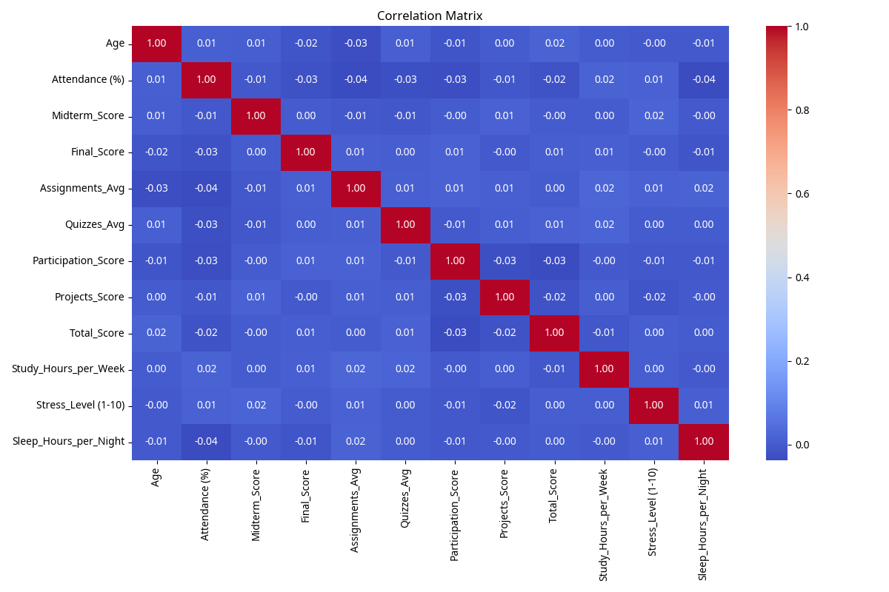

Abstract
This project aimed to analyze student academic performance using various machine learning techniques to extract meaningful insights, predict outcomes, and detect abnormal patterns. The dataset used, Students_Grading_Dataset, consists of 5,000 student records with 23 features including demographic, academic, and behavioral data such as quiz scores, assignments, attendance, stress level, and sleep hours.
The project followed five core phases: data preprocessing to remove missing values and duplicates; regression using Linear and Polynomial Regression to model the relationship between study hours and sleep patterns; classification using Decision Tree, Random Forest, Logistic Regression, SVM, and Gradient Boosting to predict student grades; clustering using K-Means and Hierarchical methods to group students based on academic attributes; and anomaly detection using Z-Score, IQR, Isolation Forest, One-Class SVM, and LOF.
Key results showed that regression models performed poorly, with an R² score of -0.0075, indicating no meaningful linear relationship. Classification accuracy peaked at 41.5% using Gradient Boosting. K-Means clustering achieved a silhouette score of 0.18, and Isolation Forest detected 129 anomalies. Notable insights included the dominance of "Grade A" in predictions, the weak impact of individual predictors in regression, and the overlap between low-performing students and flagged anomalies.
Introduction
Understanding student performance is a critical aspect of improving educational systems and supporting academic success. With the growing availability of educational data, data science techniques offer powerful tools to analyze patterns, predict outcomes, and uncover hidden insights. This project aims to apply a range of machine learning and statistical models to explore and evaluate student performance based on academic and behavioral attributes.
Using a dataset of 5,000 student records containing 23 features, we investigate various aspects such as study habits, grades, participation, stress levels, and sleep patterns. The primary objective of this project is to utilize data-driven methods to identify the most influential factors affecting student outcomes, classify academic performance levels, detect anomalies, and discover underlying group structures among students.
By implementing supervised learning models (regression and classification), unsupervised techniques (clustering), and anomaly detection methods, this project seeks to demonstrate the practical application of machine learning in the education domain. The findings can offer valuable insights for educators and decision-makers aiming to enhance student support strategies and early intervention.
Methodology
This section outlines the methodology followed to conduct the analysis on the Students_Grading_Dataset. The project was divided into five main phases: data preprocessing, regression, classification, clustering, and anomaly detection.
Data Preprocessing
The dataset used in this project is titled Students_Grading_Dataset and was obtained from Kaggle, an open-source data science platform.
https://www.kaggle.com/datasets/mahmoudelhemaly/students-grading-dataset
It contains 5,000 student records with 23 columns representing demographic, academic, and behavioral attributes such as Gender, Age, Department, Attendance (%), Assignments_Avg, Quizzes_Avg, Total_Score, and Stress_Level (1-10).

Figure 1: Distribution of Grades Among Students
Regression
We used Linear and Polynomial Regression models to predict Sleep_Hours using Study_Hours and Stress_Level as independent variables.
Classification
We applied Decision Tree, Random Forest, Logistic Regression, SVM, and Gradient Boosting models to classify students into grade categories.
Clustering
We used K-Means and Hierarchical clustering to explore natural groupings in student data based on numeric features.
Anomaly Detection
We applied Z-Score, IQR, Isolation Forest, One-Class SVM, and LOF methods to identify students with unusual patterns.

Figure 2: Correlation Matrix Between Numeric Variables
Results and Discussion
Model Performance
- Regression: Linear Regression gave very weak results (R² = -0.0075, Adjusted R² = -0.0095). Polynomial Regression didn't improve the performance. The model could not predict sleep hours.
- Classification: The best accuracy was 41.5% with Gradient Boosting. Other models like Decision Tree and Random Forest performed worse. Confusion matrices showed frequent misclassifications.
- Clustering: K-Means and Hierarchical were applied with k = 3. PCA improved the visualization, but Silhouette Scores were low (0.18, 0.12), showing weak cluster separation.
- Anomaly Detection: Statistical methods (Z-Score, IQR) found no major outliers. ML models gave different results:
- Isolation Forest & LOF: 129 anomalies
- One-Class SVM: 682 anomalies
Key Insights
Regression
Study hours and stress level could not predict sleep hours, suggesting that the relationship is complex and influenced by other factors not included in the data.
Classification
Features didn't separate grade categories well, leading to poor classification. This suggests that factors influencing grades may be more complex than what was measured.
Clustering
Clustering failed to find meaningful groups, indicating that students don't naturally divide into distinct clusters based on the available features.
Anomaly Detection
Anomaly results changed based on the model used, highlighting the importance of selecting the appropriate algorithm for this task.
Conclusion
This project aimed to analyze student data to uncover patterns related to sleep, grades, and academic behaviors using various machine learning techniques. The analysis included data preprocessing, regression, classification, clustering, and anomaly detection.
Across the models, results were generally weak. Linear and polynomial regression models failed to predict sleep hours. Classification models such as Gradient Boosting achieved the highest accuracy (41.5%) but still struggled due to feature overlap and class imbalance. Clustering showed weak group separation, and anomaly detection results varied significantly depending on the algorithm used.
These outcomes highlight that the available features were not sufficient to explain or predict key behaviors. Major challenges included limited data variability, missing behavioral features, and lack of class balance.
For future work, improvements could include testing more advanced algorithms, using cross-validation, collecting additional features (e.g., mental health, motivation), and applying feature engineering or hyperparameter tuning.
Despite the limitations, this project demonstrated how machine learning can be applied to educational data, and provided insights into what features may be valuable for understanding student outcomes. The results can guide future efforts in using data-driven methods to support academic performance analysis.
The Experiences and Skills Acquired by the Team Members
Data Science Team

Lina Fawzi Wali
445001168
Data Scientist

Ghadah Abdullah Al Zahrani
445007065
Data Analyst

Nourah Al masoudi
445000188
Machine Learning Engineer

Raba Saad Almuqati
445000127
Data Visualization Expert
All team members participated in all phases of the project including data preprocessing, model development (regression, classification, clustering, and anomaly detection), and results interpretation. The team worked collaboratively on coding, testing, and documenting the findings. Each member was equally involved and contributed throughout the project.
Skills acquired: Teamwork, communication, Python programming, data cleaning, model evaluation (R², accuracy, silhouette score), using machine learning libraries (Scikit-learn, XGBoost), and creating visualizations with Matplotlib and Seaborn.
References
- Elhemaly, M. (n.d.). Students Grading Dataset. Retrieved from https://www.kaggle.com/datasets/mahmoudelhemaly/students-grading-dataset
- Chen, T., & Guestrin, C. (2016). XGBoost: A scalable tree boosting system. Proceedings of the 22nd ACM SIGKDD International Conference on Knowledge Discovery and Data Mining, 785–794.
- McKinney, W. (2010). Data Structures for Statistical Computing in Python. Proceedings of the 9th Python in Science Conference, 51–56.
- Oliphant, T. E. (2006). A Guide to NumPy. USA: Trelgol Publishing.
- Pedregosa, F., Varoquaux, G., Gramfort, A., Michel, V., Thirion, B., Grisel, O., ... & Duchesnay, É. (2011). Scikit-learn: Machine learning in Python. Journal of Machine Learning Research, 12, 2825–2830.
- Waskom, M. (2021). Seaborn: Statistical data visualization. Journal of Open Source Software, 6(60), 3021.